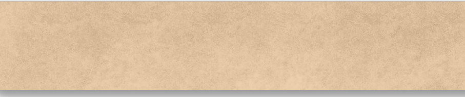

Instrucciones y Diagramas de origami
Los diagramas paso a paso son probablemente la forma más popoluar y fácil de seguir para mostrar cómo doblar papel.
Sin embargo, tratar de encontrar buenas instrucciones de origami en Internet puede ser mucho trabajo.Para ayudarte en tu busqueda,
hemos reunido la mayor base de datos de diagramas de origami gratuitos en Internet.

Camello
- Las orejas de un camello son peludas.
- El camello puede moverse fácilmente por la arena gracias a sus patas especialmente diseñadas por ellos.
- Cuando entcuentre agua, beberán la mayor cantidad posible.

Camaleón
- Los camaleones son reptiles que forman parte de la familia de la iguana.
- Cambiar de color de la pirel es una parte importante de la comunicación entre los camaleones.
- La mayaría de los camaleones tienen una cola prensil que usan para envolverse en las ramas de los arboles.

Paloma
- Una paloma adulta tiene alrededor de 10,000 plumas.
- Tienen la capacidad de ver a más de 26 millas de distancia.
- Las palomas son generalmente alimentadas con granos, pero les gusta comer fruta, verduras y semillas.
- El color de ojos de las palomas adulta puede ser color naranja, mientras que en los pichones puede ser de color marrón o pardo grisáceo.

Oso
- Tiene un cerebro muy grande comparado con su tamaño.
- El aroma de un oso es tan agudo, que pueden oler a una foca ubicada a más de 28 kilómetros de distancia.
- Los osos no tienen una vista aguda. Por el contrario, compensan su falta de campo de visión con un sentido auditivo muy fino, así como un olfato desarrollado.

Panda
- Un panda vive un promedio de 12 a 20 años.
- ¡Un panda adulto puede comer de 12 a 38 kilos de bambú al día!
- Aunque su peso máximo suele rondar los 125 kg, puede llegar a pesar hasta 150 kilogramos.
- Los osos panda son buenos trepando árboles y también pueden nadar.

Cigarras
- Dependiendo de la especie, la cigarra pueden vivir casi dos décadas.
- Cuando las larvas de cigarra salen de los huevos, se entierran bajo el suelo para absorber la savia de las raíces,
y pasan en sus escondrijos subterráneos las primeras etapas de crecimiento hasta que emergen a la superficie ya adultas.
- El canto de la cigarra tiene infinidad de variantes y en unas especies suena mucho más musical que en otras.

Mariposas
- Las alas de las mariposas son transparentes pero percibimos sus llamativos y distintos
colores gracias a que su estructura está protegida con escamas muy finas que reflejan continuamente la luz.
- Su olfato está en sus antenas, y este les permiten reconocerse unas con otras.
Pasos

Paso 1) Dobla y desdobla el papel por la mitad en ambos sentidos.

Paso 2) Dobla ambos lados hacia adentro a lo largo de las líneas punteadas.

Paso 3) Dobla y desdobla la parte superior e inferior a lo largo de las líneas punteadas.
Ve a la pagina web dando click en la imagen que quieras para ver los demas pasos